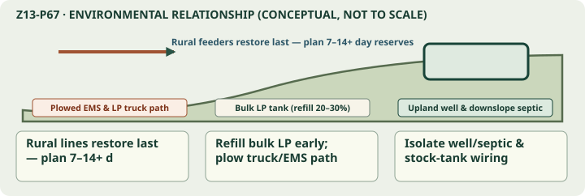

Z13-P67 · Home survival and utilities · New manuscript
Manage rural and small-acreage utility dependencies in Upper Midwest winters
Account for longer rural restoration times, private wells, bulk propane tanks, long snow-blocked driveways, and outbuilding freeze risks.
When it applies · Rural homes, hobby farms, lake cabins, and acreage properties across Minnesota and the Upper Midwest.
Equipment · Larger water/fuel reserves, propane-level gauge monitoring, cleared driveway/culvert plan, well/septic logs, and snow-plow/contractor contacts.

Actions
- Recognize that rural distribution feeders often restore LAST after widespread ice storms and wind events—plan extended drinking-water, sanitation, food, and warming contingencies well beyond urban 72-hour baselines.[D11, U08, U10]
- Monitor exterior bulk propane (LP) tank levels before peak winter (ordering refills typically around 20%–30% so tanks never run dry and require mandatory leak-checks before relighting), keep tank regulators and driveways plowed clear for delivery trucks and fire/EMS access, and protect private wells/septic fields from plow compaction.[U11, U06, U07]
- Plan livestock/pet water and frost-free hydrant contingencies safely without stretching undersized extension cords hundreds of feet through snow to stock-tank heaters.[U02, D17]
Failure recognition · Letting a rural propane tank run empty during a sub-zero week with an unplowed quarter-mile driveway blocking both delivery trucks and ambulances.[U11, U10]
Verify · Confirm bulk propane level above refill threshold, driveway/regulator kept plow-clear, extended water stored independently of electric well, and licensed trade contacts printed.[U11, U06, U08]
Stop or change course · Exhausted heating fuel, unplowed medical access, or failed well/septic systems during deep cold trigger early relocation to town before storms peak.[U17, U10]
Evidence and editorial notes
- D11 · FEMA / Ready.gov · Power Outages (current web edition)
- Section: Extended Electrical Outages and Cascading Infrastructure Failure · Conditions: Multi-day grid outages disrupting water pumps, fuel stations, ATMs, and telecoms
Support: Recognize cascading grid dependencies: gas station pumps, payment terminals, cell towers, elevators, municipal booster pumps, and medical devices all lose function during prolonged blackouts—maintain cash, vehicle fuel above half-tank, paper contacts, and backup power before storms.
Limitations: Restoring high-voltage transmission and distribution lines follows critical-infrastructure priority order, not first-reported order. · Conflicting evidence: None; anchors cascading-failure scenario planning in Z15.
Editorial note: Drives cascading infrastructure failure and 30-day resilience cards. · Specialist reviewer: Critical infrastructure and emergency management
Primary source · checked 2026-11-24 - D17 · FEMA / Ready.gov · Prepare Your Pets for Disasters (current web edition)
- Section: Pet, Service-Animal, and Vulnerable-Member Accountability · Conditions: Households with pets, service animals, children, older adults, or access/functional needs
Support: Include leashes, carriers, vaccination records, pet food/water, and pet-friendly shelter lists in household evacuation plans—never leave pets chained or trapped behind; coordinate explicit buddy assignments for children, older adults, and mobility/power-dependent household members.
Limitations: General public Red Cross shelters always admit service animals under ADA rules, whereas companion pets often require separate co-located or pet-friendly shelters. · Conflicting evidence: None; complements T10 disability planning.
Editorial note: Ensures complete household and vulnerable-group accountability in Z15. · Specialist reviewer: Accessible emergency management and animal welfare
Primary source · checked 2026-11-24 - U02 · FEMA / Ready.gov · Power Outages (current web edition)
- Section: Power Outages > Portable Generator Safe Connection and Isolation · Conditions: Homeowners using portable generators during electrical outages
Support: Run generators only outdoors at least 20 feet from doors, windows, and vents; plug appliances directly into heavy-duty outdoor-rated cords OR use a licensed-electrician-installed transfer switch—never backfeed into a wall outlet.
Limitations: Backfeeding energizes utility lines, risking electrocution of utility linemen and household electrical fires. · Conflicting evidence: Directly counters deadly "suicide cord" backfeeding myths.
Editorial note: Core electrical isolation boundary across Z13 generator cards. · Specialist reviewer: Licensed electrician and fire safety
Primary source · checked 2026-11-24 - U06 · Minnesota Dept. of Health · Wells and Borings Safety (current web edition)
- Section: Wells and Borings > Minnesota Private Well Standards and Disinfection · Conditions: Minnesota and Upper Midwest private residential wells
Support: Use a licensed Minnesota well contractor for wellhead repair, electrical pump work, or shock disinfection after flooding or backflow; maintain sanitary well caps and isolate well casings from surface snowmelt and agricultural runoff.
Limitations: DIY well-cap removal or improper chlorine mixing risks aquifer contamination and electrical shock. · Conflicting evidence: None; regionalizes EPA-WELL for Minnesota conditions.
Editorial note: Anchors Upper Midwest private-well resilience and licensed-trade handoff. · Specialist reviewer: Minnesota environmental health and licensed well trades
Primary source · checked 2026-11-24 - U07 · US EPA · Septic Systems (Onsite/Decentralized Systems) (current web edition)
- Section: Septic Systems > Power Outages, Floods, and Water Conservation · Conditions: Households with onsite septic systems during electrical outages or flooding
Support: Conserve household water sharply during outages (especially with pump-assisted septic tanks), avoid driving over drainfields, never pump out a flooded tank prematurely (buoyant tanks can float), and have licensed professionals inspect flooded systems.
Limitations: Using high-volume household plumbing when lift pumps are dead backs sewage directly into basements. · Conflicting evidence: None; critical outage wastewater boundary.
Editorial note: Grounds septic-system limits and outage water conservation in Z13. · Specialist reviewer: Onsite wastewater engineering and public health
Primary source · checked 2026-11-24 - U08 · FEMA / Ready.gov · Water Storage and Emergency Supply (current web edition)
- Section: Water > Emergency Household Supply, Shutoff, and Alternate Indoor Sources · Conditions: Household plumbing disruptions, water-main breaks, or winter freeze outages
Support: Store at least 1 gallon per person per day for several days (two weeks where feasible for extended outages), know the main water shutoff valve location, and recognize clean indoor water-heater reserve boundaries only after shutting off power/gas and confirming supply safety.
Limitations: Never use water from radiators, hot-water boilers, or chemically treated toilet tanks for drinking. · Conflicting evidence: None; complements CDC-S (W06, W14).
Editorial note: Covers household water shutoffs, pipe-freeze prevention, and safe indoor reserves. · Specialist reviewer: Plumbing safety and drinking-water public health
Primary source · checked 2026-11-24 - U10 · FEMA / Ready.gov · Winter Weather (current web edition)
- Section: Winter Household Resilience > Frozen Pipes, Ice Dams, and Heating Loss · Conditions: Sub-zero Upper Midwest winter outages and prolonged cold snaps
Support: Prevent burst pipes by insulating exposed lines, keeping cabinet doors open, shutting off and draining water lines per plumbing guidance if indoor temperatures drop toward freezing, and consolidating household occupants into one safe insulated interior room.
Limitations: Draining hydronic boilers or gas water heaters requires exact manufacturer/plumber steps to prevent equipment damage or gas leaks. · Conflicting evidence: None; regionalizes winter home defense for Minnesota conditions.
Editorial note: Anchors winter pipe protection, thermal-zone consolidation, and abandonment thresholds. · Specialist reviewer: Residential plumbing, HVAC, and cold-weather emergency management
Primary source · checked 2026-11-24 - U11 · FEMA / Ready.gov · Hazardous Materials Incidents (current web edition)
- Section: Natural Gas Leaks, Fuel Odors, and Utility Shutoff Boundaries · Conditions: Suspected household natural gas, propane, or fuel-oil leak
Support: If you smell rotten eggs/mercaptan or hear hissing near gas lines, leave the building immediately without toggling light switches or using phones inside, and call 911 and the gas utility from outside; never turn gas back on yourself.
Limitations: Only the gas utility or licensed technician may restore shut-off gas service and relight pilot systems safely. · Conflicting evidence: None; critical residential utility stop condition.
Editorial note: Establishes strict utility-leak evacuation and licensed restoration gates. · Specialist reviewer: Gas utility safety and fire service
Primary source · checked 2026-11-24 - U17 · FEMA / Ready.gov · Evacuation (current web edition)
- Section: Household Evacuation Thresholds When Utilities Fail · Conditions: Uninhabitable indoor temperatures, sewage backup, persistent CO alarm, or structural/utility hazard
Support: Establish clear pre-agreed exit triggers to relocate to a warming center, hotel, or relatives BEFORE indoor freezing, carbon monoxide alarms, medical-device battery exhaustion, or impassable blizzard roads trap occupants.
Limitations: Waiting until indoor pipes burst or batteries hit zero removes safe travel options. · Conflicting evidence: None; aligns with T13 and E14.
Editorial note: Defines objective household abandonment thresholds in Z13. · Specialist reviewer: Emergency management and cold-weather operations
Primary source · checked 2026-11-24
Source lineage · MN Dept. of Health Wells and FEMA Winter Weather; new manuscript · Classification · New manuscript.